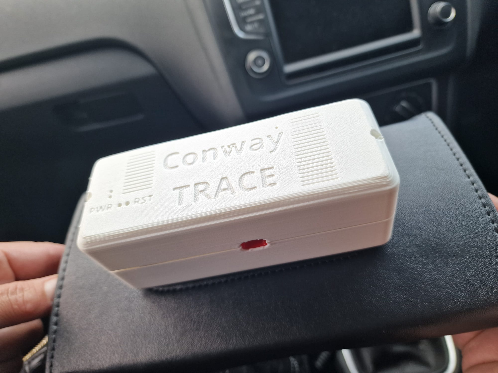
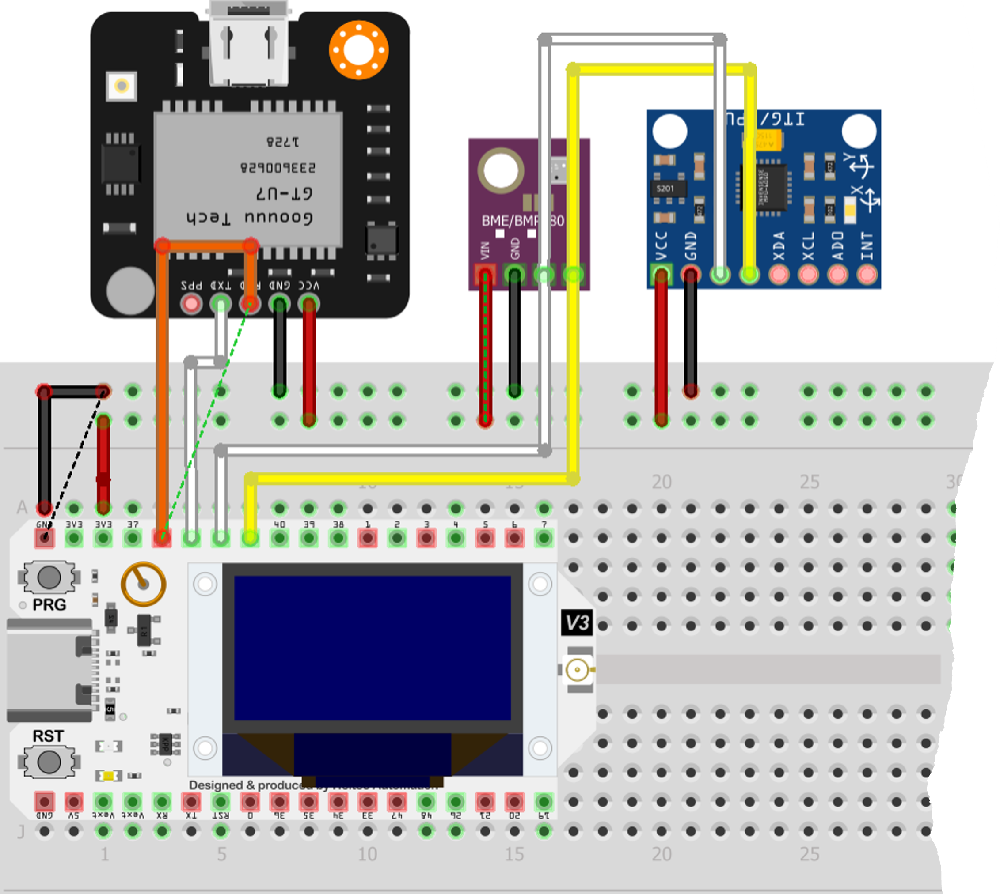
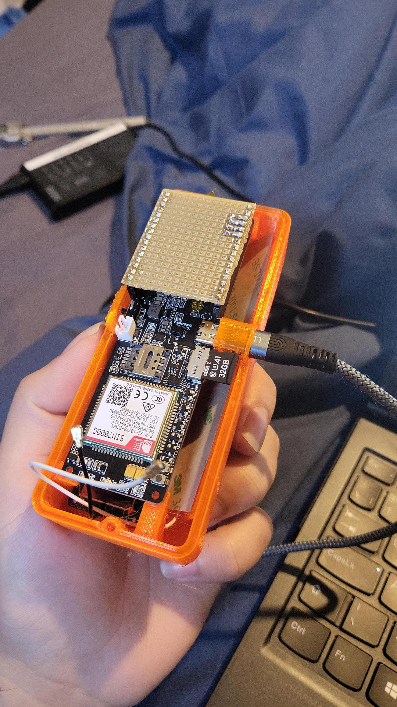
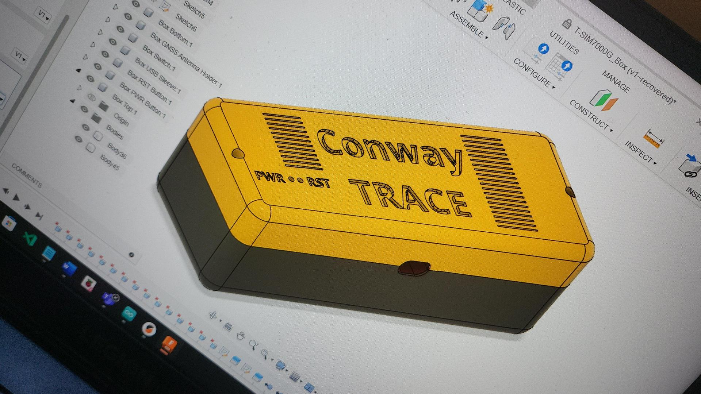
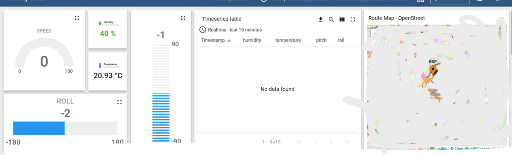

Final-year industry project · Conway Packaging Services · 2024 – 2025
TRACE — Tracking and Real-time Analytics for Cargo and Enterprises
An IoT device built to answer a question Conway Packaging Services couldn't otherwise prove: did this equipment get damaged in transit, or after it was delivered? First author on the resulting peer-reviewed paper at IEEE ICAC 2025.

01 The problem
Conway Packaging Services faced difficulties when delivering equipment to customers, particularly when items were returned damaged. In some cases, Conway suspected equipment was being deliberately damaged after delivery by customers who no longer needed it and wanted to avoid being held responsible for its return or associated costs.
The core difficulty was evidence: once an item was delivered, it was hard to determine whether damage occurred during transportation or after the customer received it. This led to disputes between Conway and its customers, with Conway potentially held responsible for damage that may not have happened while the equipment was under its control.
Conway wanted to investigate whether a tracking and monitoring device could provide an objective record of the equipment's location and physical condition throughout its journey — recording events like significant impacts, orientation changes and environmental conditions to help establish whether an item experienced an abnormal event in transit or after delivery. That requirement became TRACE: a prototype IoT tracking device monitoring GPS location, impact/tilt, temperature and humidity, transmitting data remotely.
02 First prototype
The initial build was based on a Heltec LoRa 32 V3 (ESP32-S3), paired with a GT-U7 GPS module for location and speed, a BME280 sensor for temperature and humidity inside the crate, and an MPU6050 accelerometer to monitor tilt angle and improve GPS speed accuracy through sensor fusion.
For connectivity, this version paired the board with a SIM800L module — which turned out to be the weak link. The SIM800L needed a specific, fairly narrow battery voltage range to run reliably, and only supported 2G, a network many providers are actively phasing out in favour of 4G and beyond.

03 Moving to an integrated board
To fix the connectivity problems, the design moved to a LILYGO T-SIM7000G-S3. This single board integrates GPS and 4G cellular, removing the need for the separate GPS module and the troublesome SIM800L entirely, and adds an onboard MicroSD slot for offline data logging when there's no signal. The sensor set stayed the same — BME280 for temperature/humidity, MPU6050 for tilt and GPS sensor fusion — just on a simpler, more reliable board.


04 Dashboard & alerting
Data is visualised in ThingsBoard, which gives a real-time view of location, speed, temperature, humidity and tilt angle through customisable graphs, gauges and maps. Because it's accessible remotely, Conway would be able to check a shipment's condition from anywhere with an internet connection, with alerts configurable for thresholds like excessive tilt or high temperature — flagging abnormal events as they happen rather than after the fact. A web interface for pulling stored data directly from the dashboard rounds out the system alongside the onboard MicroSD logging.

05 Testing
Rather than relying on lab simulation alone, testing was done in the real world — driving the device around the city in my own car to generate genuine GPS, speed, tilt and environmental data under real transport conditions rather than idealised bench tests.
06 Publication
The project was developed with Birmingham City University's College of Computing and Conway Packaging Services (CPS) Ltd, and I'm first author on the resulting paper, published at the 2025 30th International Conference on Automation and Computing (ICAC) in Loughborough, UK.
DOI: 10.1109/ICAC65379.2025.11196434 ↗